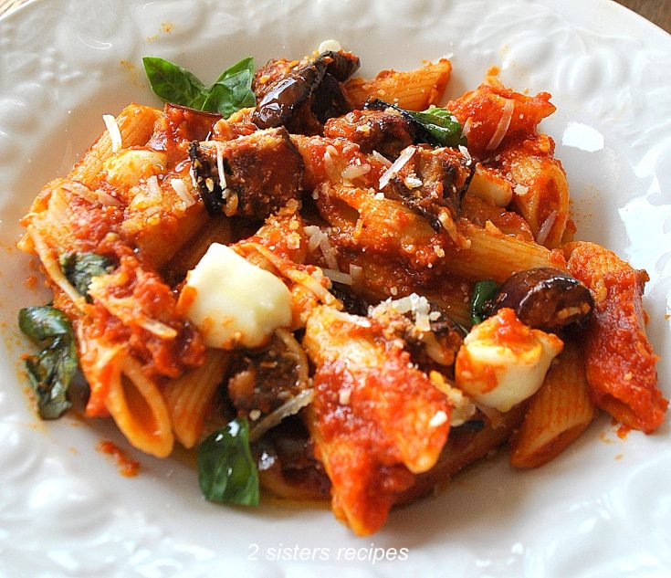

Version Control

Welcome to class. Today we're learning Git, the version control system that powers nearly every software project in the world. Git has a reputation for being intimidating, so we're going to learn it the way I learned to cook: by spending time in the kitchen.
Every Git concept maps cleanly onto something you already understand if you've ever cooked a meal. By the end of this lesson, you'll know not just what the commands do, but why they exist.
Before we dive into the theory, let's put version control into practice. Take the project you've already developed in class, and create three different versions of it. Each version should include one of the following changes:
By the end of this lesson, you'll understand how Git makes managing these versions effortless, and how you could have created all three from a single codebase using branches. The manual versioning you're doing right now is exactly what Git was invented to eliminate.
Imagine you're developing a family recipe for tomato sauce. You make it on Monday, tweak it Tuesday, ruin it Wednesday, and on Thursday you wish you could go back to Tuesday's version. Without a system, you're stuck.
Git is the system. It's a time machine for your kitchen — a way to take snapshots of your recipe at any moment, label them, branch off and try variations, and confidently come back to any previous version without losing anything.
The vocabulary we'll use:
Hold these in your head. Everything that follows is just verbs operating on these nouns.
Before you cook, you tell Git who's cooking. This identifies you on every dish you commit.
git config --global user.name "Chef SRH student"
git config --global user.email "srh-student@kitchen.com"Now let's start a new cookbook for our pasta restaurant.
mkdir nonna-pasta
cd nonna-pasta
git initgit init is the moment you walk into an empty kitchen and declare it a working kitchen. Git creates a hidden .git folder — think of it as the head chef's private notebook where every change will be recorded forever.
Let's write our first recipe.
echo "Boil water. Add pasta. Wait 8 minutes." > spaghetti.txtYou now have an ingredient on the counter. Git sees it but hasn't done anything with it yet. Check the kitchen's status:
git statusGit will tell you spaghetti.txt is untracked — it's a tomato sitting on your counter, not yet on the cutting board.
git add)git add spaghetti.txtYou've decided this ingredient belongs in the dish. It's now staged — on the cutting board, prepped, waiting to be plated.
git commit)git commit -m "Add basic spaghetti recipe"The commit is the photograph of the finished plate. Git permanently records exactly what was on the cutting board, who cooked it, when, and what you said about it. That message — "Add basic spaghetti recipe" — is the caption under the photo. Future you will thank present you for writing clear captions.
The mental model that unlocks Git for most beginners:
Counter (working dir) → git add → Cutting board (staging) → git commit → Cookbook (history)Three zones, two verbs. That's the whole core loop.
Let's improve our spaghetti.
echo "Boil salted water. Add pasta. Cook 8 minutes. Drain." > spaghetti.txtRun git status and Git will say spaghetti.txt is modified. The dish on your counter no longer matches the photograph in the cookbook.
You have choices:
git diff # Show me what changed since the last photograph
git add spaghetti.txt # I like the changes, put them on the cutting board
git commit -m "Salt the water; remember to drain"Or, if you decide your changes were a mistake — you accidentally added cinnamon to your tomato sauce — you can throw out the work and revert to the last photograph:
git restore spaghetti.txtThis is one of Git's superpowers. Mistakes aren't permanent. As long as something has been committed, you can always come home to it.
Here's where Git gets genuinely powerful. Suppose your spaghetti recipe is solid and customers love it. But you want to experiment with a spicy arrabbiata version. You don't want to risk the working recipe.
git branch arrabbiata # Create a new experimental kitchen
git switch arrabbiata # Move into it(Older tutorials use git checkout arrabbiata — same thing, newer syntax is switch.)
You're now in the arrabbiata kitchen. Anything you cook here is isolated from the main kitchen.
echo "Boil salted water. Add pasta. Cook 8 minutes. Drain. Add chili oil and crushed red pepper." > spaghetti.txt
git add spaghetti.txt
git commit -m "Spicy arrabbiata variant"Now switch back to the main kitchen:
git switch main
cat spaghetti.txtThe chili is gone! You're back in the original kitchen with the original recipe, untouched. The arrabbiata version is safely sitting in its own kitchen, waiting for you whenever you want to return.
This is the most liberating idea in Git: you can try anything, anywhere, without fear, because branches are cheap and isolated.
Suppose the arrabbiata is a hit. You want to bring it back into the main menu. You merge the experimental kitchen into the main one.
git switch main
git merge arrabbiataGit takes the changes from the arrabbiata branch and applies them to main. If the changes don't overlap with anything else, the merge happens silently and cleanly.
Imagine two cooks both edit spaghetti.txt at the same time on different branches. One adds garlic, the other adds basil, both on the same line. When you merge, Git can't decide which ingredient wins. This is a merge conflict.
Git will mark the file like this:
<<<<<<< HEAD
Add 3 cloves of garlic.
=======
Add 5 leaves of fresh basil.
>>>>>>> basil-branchYou — the head chef — open the file, decide what the dish actually needs (probably both!), edit the file to your liking, then:
git add spaghetti.txt
git commit -m "Resolve garlic vs basil — use both"Conflicts feel scary the first time. They're really just Git asking you to make a judgment call it can't make on its own.
So far our cookbook lives on one laptop. To collaborate with other cooks, we put a copy on a shared shelf — typically GitHub, GitLab, or Bitbucket. This shared copy is called a remote.
git remote add origin https://github.com/srh-student/nonna-pasta.git
git push -u origin maingit push sends your local commits up to the shared cookbook. origin is the conventional name for "the main shared copy."
When a teammate updates the shared cookbook, you bring their changes down with:
git pullThink of pull as walking to the shared shelf, seeing what's new, and copying those recipes into your kitchen.
The everyday rhythm of working with a team:
git pull — get the latest from the shared cookbookgit add and git commit — photograph your changesgit push — share them backIf you want to start working on an existing project, you don't init — you clone:
git clone https://github.com/some-chef/famous-pizza.gitThis is photocopying the entire cookbook, including its full history, onto your kitchen counter.
Your cookbook accumulates dishes over time. To see them:
git logThis prints every commit in reverse order — newest dish first. Each entry shows the chef, the date, the message, and a unique ID (a long string of letters and numbers called a hash).
For a more visual version:
git log --oneline --graph --allThis shows the full branching history as a tree. You'll see exactly when arrabbiata branched off, when it merged back, and every dish along the way.
To go back and look at the kitchen exactly as it was at a past commit:
git checkout <commit-hash>Just be aware: this is a read-only visit. If you want to actually start cooking from that point, branch off it.
Let's walk through a full day in the kitchen.
# Start your morning by syncing with the team
git pull
# Create a branch for today's experiment
git switch -c lemon-zest-pasta
# Edit the recipe
echo "Boil salted water. Add pasta. Drain. Toss with butter, parmesan, and lemon zest." > spaghetti.txt
# Stage and commit
git add spaghetti.txt
git commit -m "Add lemon zest pasta variation"
# Push the branch to the shared cookbook
git push -u origin lemon-zest-pasta
# Open a pull request on GitHub asking the head chef to taste-test and mergeA pull request (PR) is a polite letter to the team that says: "I cooked something on my branch. Please taste it, tell me what you think, and if you like it, merge it into the main menu." It's how teams review each other's work before it becomes official.
Pin this somewhere visible until it's muscle memory.
| Command | Kitchen meaning |
|---|---|
git init |
Declare an empty room a working kitchen |
git status |
Look around — what's on the counter? |
git add <file> |
Move an ingredient to the cutting board |
git commit -m "..." |
Plate the dish, photograph it, file it in the cookbook |
git diff |
Compare the counter to the last photograph |
git restore <file> |
Throw out my counter changes; reset to the cookbook |
git log |
Read through the cookbook's history |
git branch <name> |
Open an experimental kitchen |
git switch <name> |
Walk into a different kitchen |
git merge <name> |
Bring another kitchen's work into this one |
git clone <url> |
Photocopy someone's whole cookbook |
git pull |
Bring updates from the shared cookbook to mine |
git push |
Send my updates up to the shared cookbook |
my-recipes. Initialize it as a Git repo.pancakes.txt file with a basic recipe. Commit it with a clear message.vegan and make a vegan version. Commit on that branch.vegan into main. Look at git log --oneline --graph --all and trace the story.pancakes.txt file accidentally. Use git restore to bring it back.If you can do all seven without looking anything up, you understand Git better than 80% of working developers.
Git rewards patience. The first week feels like learning to use chopsticks left-handed. The second week, things click. By the third week, you'll wonder how anyone ever wrote code without it.
The kitchen analogy isn't a teaching trick — it's the actual mental model that experienced developers use. Counter, cutting board, cookbook. Add, commit, push. Branches are kitchens. Merges are recipe combinations. Hold onto that and the rest is just syntax.